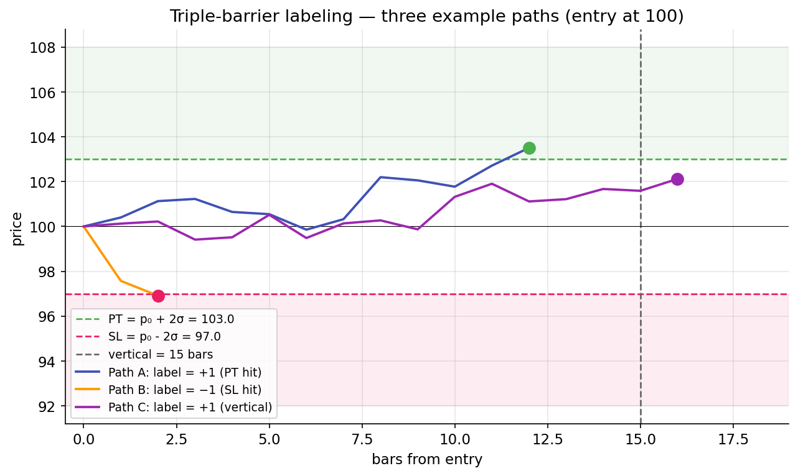

Triple-barrier labeling¶
Given the labeling problem from the previous lesson: events happen at specific times, labels must respect path dependence, magnitudes should be comparable across regimes. Triple-barrier is the concrete procedure that delivers all three.
It's a few lines of code with a lot of pedagogy packed in.
Three barriers, one label¶
At each event at time \(t_0\), draw three barriers:
- Upper barrier at price \(p_0 \cdot (1 + \text{pt\_mult} \cdot \sigma)\) — a profit-take, set some multiple of current vol above entry.
- Lower barrier at price \(p_0 \cdot (1 - \text{sl\_mult} \cdot \sigma)\) — a stop-loss, same logic below.
- Vertical barrier at time \(t_0 + \text{vertical\_bars}\) — a time stop, always present to prevent infinite holds.
Walk forward from \(t_0\) bar by bar. The first barrier the price touches determines the label:
- Upper hit first → label \(= +1\),
barrier_hit = "pt". - Lower hit first → label \(= -1\),
barrier_hit = "sl". - Vertical reached first (neither barrier crossed) → label \(= \text{sign}(r_\text{final})\),
barrier_hit = "vertical".
The label is always in \(\{-1, 0, +1\}\), with \(0\) possible only at the vertical barrier with exactly zero net return (rare but permitted).

Why vol-scaling matters¶
The barriers are scaled by a rolling vol target \(\sigma\), not fixed dollar amounts. Concretely, the upper barrier for an event at \(t_0\) is \(p_0 \cdot (1 + 2 \sigma_{t_0})\) if pt_mult = 2.0 — where \(\sigma_{t_0}\) is the vol as of entry.
The scaling does two things:
-
Same pt_mult across regimes produces labels of comparable difficulty. In a low-vol regime (σ = 0.5%), the 2σ barrier is at +1%. In a high-vol regime (σ = 3%), the 2σ barrier is at +6%. A profit-take label of +1 in both regimes answers the same question: "did this move get meaningfully above noise?" The binary label is regime-comparable.
-
Prevents pathological outcomes. A fixed dollar barrier (e.g., always +$5) gets hit almost instantly in high-vol regimes (everything's a winner) and almost never in low-vol regimes (everything times out). Labels aren't useful under either extreme.
The rolling vol used here is afml.labeling.rolling_vol, which is EWM std of arithmetic returns, span=100 by default. The choice of arithmetic vs log returns is documented in Lesson 1 — the barriers compare p_t / p_0 - 1 against mult * σ, so both must be in arithmetic-return units.
The side adjustment¶
A subtle but essential feature: triple-barrier handles both long and short primary signals via a side parameter.
For a long signal (side = +1), the return series is computed as p_t / p_0 - 1. A rising price produces positive returns; the upper barrier (profit-take for a long) is hit when returns climb; the lower barrier (stop-loss) is hit when they fall.
For a short signal (side = -1), the return series is multiplied by the side: (p_t / p_0 - 1) * side = -(p_t / p_0 - 1). A rising price now produces negative side-adjusted returns, correctly representing a losing short. The upper barrier — still "profit-take" — is hit when the side-adjusted return rises, which happens when the underlying falls.
The output label uses the same sign convention regardless of side: +1 means "the trade worked," -1 means "it didn't." A profitable long gets label +1; a profitable short also gets label +1. The sign convention isn't about price direction — it's about whether the trade was profitable.
The vertical barrier and its edge case¶
The vertical barrier caps holding period. Without it, an event might never hit either horizontal barrier in bounded time, and the labeling loop would have to be unbounded. The vertical barrier is typically set to 5-20 days for daily data (depends on strategy horizon).
What happens at the vertical barrier is the edge case. If vertical is reached and the realized return is positive but hasn't touched the upper barrier, the label is sign(return) = +1. This captures "the trade was right-directional but didn't reach the profit-take threshold" — still a useful signal, labeled the same as a profit-take.
The label = sign(final_return) convention is AFML's choice. An alternative — label = 0 at vertical — is cleaner in terms of "no barrier was crossed," but loses directional information. The signed convention is more informative at the cost of slight ambiguity in interpretation.
Output schema¶
The output of apply_triple_barrier is a DataFrame with columns:
| Column | Type | Meaning |
|---|---|---|
event_idx |
Int64 | Index of the event entry bar |
exit_idx |
Int64 | Index where a barrier was hit (or vertical) |
ret |
Float64 | Side-adjusted realized return (p_exit/p_entry - 1) * side |
label |
Int8 | +1, 0, or -1 per the rule above |
barrier_hit |
Utf8 | "pt", "sl", or "vertical" |
Every event produces a single row. The exit_idx is essential for computing the label horizon \(t_1[i]\) used in purged-k-fold CV — without it, the model selection step doesn't know how much to purge.
Tuning pt_mult and sl_mult¶
The two multipliers are the main calibration knobs. Typical starting values: pt_mult = sl_mult = 2.0 (symmetric 2σ barriers). Variations:
- Asymmetric barriers reflect asymmetric risk preferences. A strategy with a "let winners run" ethos uses
pt_mult > sl_mult(wider profit target, tighter stop). A mean-reversion strategy usespt_mult < sl_mult(tight profit-take at the reversion, wider stop for overshoot). - Wider barriers produce fewer hits on the barriers (more vertical-barrier exits), slower labels, lower SNR per label.
- Tighter barriers produce faster hits, more +1/-1 labels, but also more whipsawing — moves that briefly cross a barrier before reversing will be labeled, and those labels can be noisy.
The calibration should reflect the strategy's intended holding period and risk profile. There's no universal right answer. Running a small grid over {1.5, 2.0, 2.5} for each multiplier is a reasonable starting scan.
Connecting to primaries¶
Triple-barrier alone doesn't tell you when to trade. It tells you, given an event, what label to assign the outcome. The events themselves come from a primary signal:
- RSI(2) crossing oversold/overbought (as in the capstone strategy).
- Moving-average cross.
- A gex-regime flip.
- A structural break detected by CUSUM.
- A news event trigger.
Events are generated externally and passed to apply_triple_barrier as a list of bar indices. The function doesn't know or care what rule produced them. This separation is clean: the primary is swappable, the labeling is universal.
Where labels get used¶
Labels feed two downstream things in the trading project:
-
Training a secondary model for meta-labeling (next lesson). The secondary's target is
(label > 0)as a binary — "did the primary's direction work?" Themeta_labelfunction inafml.labelingbinarizes the triple-barrier output. -
Evaluating primaries. Before bothering to train a meta-labeler, you can look at raw primary performance: what fraction of primary signals hit the upper barrier, what fraction hit the lower, how much of the return is recovered. This is essentially descriptive analysis on the triple-barrier output.
Without labels, neither of these is possible. Without sensible labels (not fixed-horizon returns), neither of these would be informative.
The failure modes¶
Even triple-barrier has failure modes worth naming:
- Vol scaling is lagging. The
rolling_volEWM has 100-day span. When vol regime changes quickly, barriers can be calibrated to stale vol for a few weeks, producing systematically mis-scaled labels. - Overlapping labels. As discussed in the labeling problem and purging lessons, consecutive events can produce overlapping label horizons. This is a CV problem, not a labeling problem per se, but it originates in the labeling choice.
- Path ambiguity at barrier hits. If both the upper and lower barriers could plausibly hit on the same bar (due to intrabar volatility), daily-bar data can't disambiguate. The code uses bar-close prices; intraday paths might have crossed both, but that's invisible to a daily labeling loop.
For most purposes, these are minor compared to the problems triple-barrier solves. But keep them in mind when sanity-checking labels around high-vol regimes.
What you can now reason about¶
- Why the same
apply_triple_barrierfunction handles long and short signals — the side adjustment flips the return series, so the profit-take / stop-loss semantics remain consistent. - Why vol-scaling barriers produces labels that are comparable across regimes — a 2σ label means the same thing in 2017 and 2020 even though the dollar move is 5× different.
- The trade-offs in choosing pt_mult and sl_mult — tighter barriers mean more labels per unit time but noisier individual labels; wider barriers mean slower but cleaner labels.
Implemented at¶
trading/packages/afml/src/afml/labeling.py:52 — apply_triple_barrier(prices, events, sides, config, vol):
events: array of integer indices identifying event bars.sides: array of±1matchingevents;+1for long,-1for short.config:BarrierConfig(pt_mult, sl_mult, vertical_bars).vol: per-bar vol series (typically fromrolling_vol).
The implementation loops over events, walking prices forward from each event until a barrier hits or vertical is reached. Label and exit index are recorded per event. The function has property tests and a known-value regression test per the AFML package's 90% coverage floor on labeling.
The meta_label(triple_barrier_out, sides) function at line 126 binarizes the output for secondary-model training: label > 0 → meta = 1, else meta = 0.
Next: Meta-labeling →